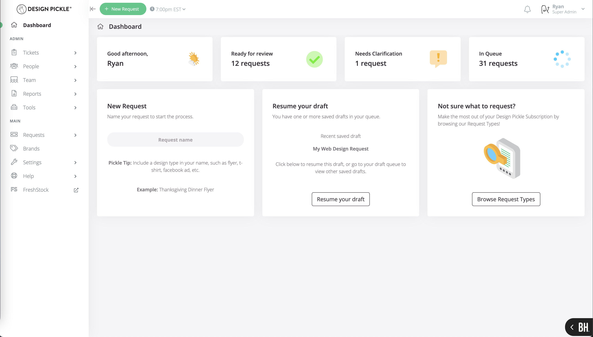

Senior Ruby on Rails Engineer
Grand Rapids, MI
In the Fall of 2020, after being in business for nearly 6 years (which was mostly filled with growing, building new features, and running as quickly as possible), Design Pickle decided to undergo its first site-wide redesign. Up until this point, the site could best be described as functional. It was not ugly, but it was not pretty.
With a growing Product Team (it had recently grown from 3 to 7 engineers, from 1 to 3 UI/UX designers, and from 1 to 3 product managers), we decided that it was finally time to upgrade the UI/UX of the site. This included an upgrade from Bootstrap 3 to Bootstrap 4, incorporating the Hyper Bootstrap theme, adding a new dashboard page upon login (instead of taking you right into the request form), and updating the request form again.
As the team grew, this was the first project that I had very little direct involvement in. I checked in weekly to ensure progress and to guide decisions, but the team ran largely independently. The engineers and designers collaborated to make small decisions, and I ensured everyone on the team was up to speed and able to contribute.
In the final two weeks before launch, I helped organize and prioritize a backlog of required tasks and push the project across the finish line, cleaning up any broken pages and ensuring that all pages had been considered in the rewrite.
Although we did not run A/B tests or do a slow rollout to gauge customer reaction, I believe this was a huge improvement across the board for the site. The navigation is much clearer, there is a much more obvious call to action on each page, and it gives the site a solid foundation that was built out purposefully.
This was also a big movement forward in my ability to delegate and trust that work would be completed without my direct involvement. By managing from a higher level and ensuring everyone on the team was moving in the right direction, I was able to direct multiple projects simultaneously and help the company move at a faster pace.
